Egy parányi szalon,
A nyugalom szigete...
Ha szépülni vágyom
Én ide tipegek.
Fantasztikus masszázs
Üdíti testemet
Míg a kezelések által
Éveket nyerhetek.
Ha szépülni vágyom,
Én ide tipegek!
Egy parányi szalon,
a csodák szigete...
/Matejka Ágnes/
Rólam
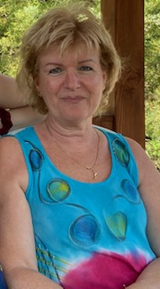Fáczán Péterné Zsuzsi vagyok a Levendula Szépségszalon megálmodója. Küldetésem a női vendégek testi, lelki harmóniájának megteremtése, szépségének megőrzése, egészségének javítása. 2004. novemberében nyitottam meg Óbuda szívében kis szalonomat, azóta kozmetikám számtalan nőnek adta vissza az önbizalmát. Munkám során csak professzionális termékkel dolgozom, folyamatosan képzésre járok, a szakmai fejlődés folyamatosan motivál. Figyelem kinek mire lenne szüksége, így kezeléseim nem csak testének felfrissülésében, de a lelki egyensúly visszaállításában is segítséget nyújtanak akár kozmetikai kezelést, akár testkezelést vesz igénybe. Az általam alkalmazott kezeléseket saját magamon is mindig kipróbálom és hatékonynak tartom, így valóban jó megoldást tudok javasolni ügyfeleim problémáira.
Algologie arckezelés
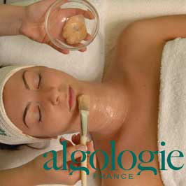
Az alga jótékony hatását már a maják, aztékok és az ókori görögök is ismerték, és ezen a hatáson alapul a legmodernebb algologie arckezelés is. Az algologie kezelés revitalizálja a bőrt, aminek eredménye ápolt, friss érzés, a bőr öregedésének lassítása.
Az óbudai Levendula szalon különlegessége, hogy sok más kozmetikával ellentétben mi 100%-os algafelhasználással dolgozunk, mely még intenzívebbé és hatásosabbá teszi az kezelést. Ha fáradtnak vagy „elhasználódottnak” érzi magát, jöjjön el Óbudára, és az algologie arckezelés során megfiatalítjuk, újjáélesztjük arcbőrét!
Minden arckezelés után jár egy ajándék gépimasszázs kezelés!
MRT koreai arcemelő és fiatalító masszázs
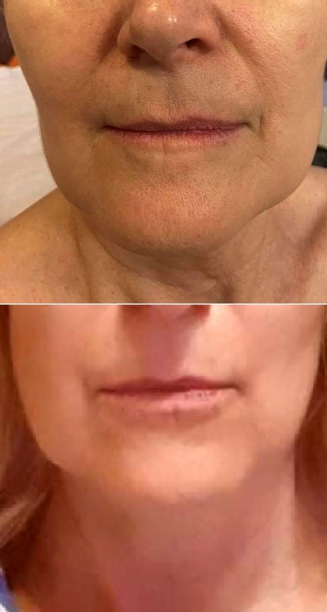
A koreai nők szépsége, arcápolási rutinja méltán világhírű: a több ezer éves hagyományt ötvözi a legmodernebb technológiákkal. A koreai MRT, azaz Manual Reface Therapy masszázs különlegessége, hogy saját, professzionális termékekkel dolgozom, így a masszázs azonnali látványos eredményt hoz.
A kezelésnek köszönhetően megemelkedik az arckontúr, eltűnnek az apróbb bőrhibák, kisimulnak a ráncok. Mivel az MRT masszázs intenzív nyirokmasszázs is egyben, optimalizálja a bőr keringését az arcon, nyakon, dekoltázson. Jöjjön el egy masszázsra és nyerje vissza bőre fiatalos szépségét!
Az MRT masszázs nem hagyományos masszázs, hanem arc-megújító hatású. Teljes mértékben feltölt, ezért az azonnali, látványos eredmény miatt úgy fogja érezni, mintha rögtön 10 évet fiatalodott volna.
Minden arckezelés után jár egy ajándék gépimasszázs kezelés!
Vendég mondta: ,,Megint gyönyörü lett a bőröm! Éveket fiatalodtam! Imádom ezt a csendet, nyugalmat, ami itt van.."
Gigi Bioplazma arckezelés
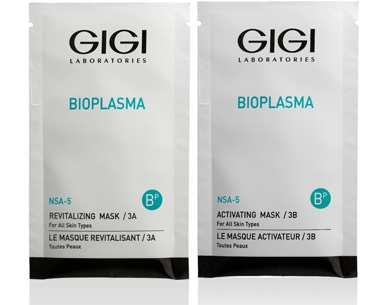
Egy tökéletes arcfiatalitó rendszer. A kezelés menete: Eltoljuk a bőr ph-Enzimes peeling Dupla pakkolás aktivmaszkokkal
Ultrahang:beviszünkvegy hatoanyag koktélt 6 féle anyag hozzáadásával.
Ezután sheavajjal, Hialuronnal, olajokkal végzünk egy arc, nyak, dekoltázs, kar masszázst!
A végén zárunk egy Bioplazma pakkolással!
Szinte minden bőrre jó!
Ráncokra,tág porusokra, laza tonisokra,
Rozáceára, Dehidráltságra és mindezt holttengeri termékekkel!
Bőrmegújítás felsőfokon!
Minden arckezelés után jár egy ajándék gépimasszázs kezelés!
Kezelésem végén szinte mindig elhangzik: ,,Akkor most kezdjük elölről?''
Tudjon meg többet: A Gigitől
Gyantázás
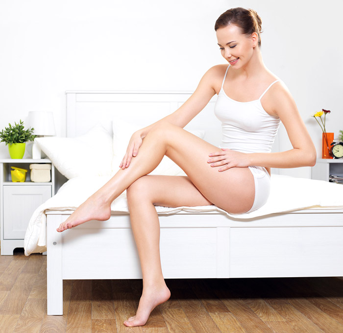
Felejtse el a zavaró szőrszálakat és a borotvát, helyette élvezze a hosszantartó selymes simaságot. A Levendula Szalonban hatékony, bőrnyugtató krémekkel, olajokkal kezeljük a gyantázott területet, így a bőr kipattogásától érzékeny, vékony bőrű vendégeimnek sem kell tartani.
Térjen be hozzánk Óbudára lábgyantára, kargyantára, intimgyantára, hónaljgyantára, szemöldökgyantára vagy bajuszgyantára és élvezze a selymes, szőrtelen bőrt akár 3-4 hétig.
Sokéves tapasztalatomnak hála a gyantázásom alig kellemetlen és majdnem teljesen fájdalommentes.
Epilfree tartós szőrtelenítés
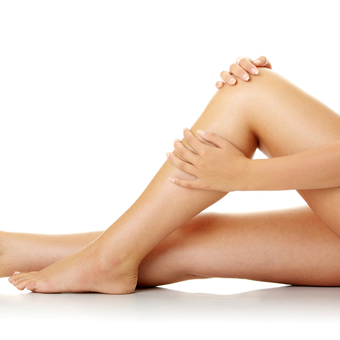
Szívesen kipróbálna egy új, hosszantartó megoldást a kellemetlen szőrszálakra? Tegye próbára az Epilfree tartós szőrtelenítést, ami egy kezeléssorozattal akár 4-5 évre megakadályozza a szőrnövekedést! Az Epilfree eljárás gyengíti az erős szőrszálakat, növekedésük pedig jelentősen lassul, ráadásként pedig teljesen fájdalommentes.
Az Epilfree szőrtelenítés a test minden területén alkalmazható, függetlenül a bőr és szőrtípusától. Nem károsítja a bőrt, nem okoz sérüléseket, nem erősíti a szőrtüszőket, így Ön gondtalanul élvezheti a selymesen sima bőr érzését.
Fülbevaló belövés
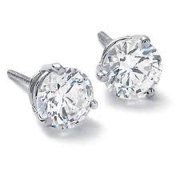
Fájdalommentes fülbevaló és piercing belövés, higiénikus eszközökkel, profi, rutinos kézmozdulattal! Jöjjön el az óbudai Levendula Szalonba, válogasson fülbevalóink és piercingjeink széles választékából, és újítsa fel megjelenését pár perc alatt!
A fülbevaló belövés után fontos a belövés helyét tisztán tartani az első hetekben, illetve a belőtt fülbevalót az első hónapban nem szabad kivenni. Ezalatt az idő alatt a fülcimpa behegesedik, kialakul a stabil átjárhatóság, így az első hónap letelte után akár naponta váltogathatja fülbevalóit.
Szempilla- és szemöldökfestés

Emelje ki szemeit tartós szempilla- és szemöldökfestéssel és tündököljön mindig a legjobb formájában! A szempilla- és szemöldökfestést jó szívvel ajánlom mindenkinek, aki világos színeit szeretné hangsúlyosabbá tenni, aktívan sportol, rendszeresen szaunázik, vagy csak a reggeli sminkelésre szeretne kevesebb időt fordítani.
A szempilla- és a szemöldök festése fájdalommentes, tartós megoldás, mellyel mindig csinos és ápolt lehet. Az eljárás 15-20 percet vesz igénybe, utána viszont hetekre elfelejtheti a szemöldökceruzát és a szempillapirált. Spóroljon meg időt a reggeli sminkelésnél, próbálja ki a tartós szempilla és szemöldökfestést!
Adrienne
"Igazi felüdülés minden, kozmetikában tett látogatás! Sokféle szolgáltatást kínál, mondhatni tetőtől talpig."
- Választható:
Hullámmasszázs
A hullámmasszázs kezelés az egyik legnépszerűbb wellness szolgáltatásunk, hiszen amellett, hogy kellemesen bizsergetve masszíroz, egészségünk óvásának is remek eszköze! A kezelés különlegessége a speciális overall nadrág, ami hullámozva masszírozza talptól felfelé, a mell alatti részig a látogatókat.
Fájdalomcsillapító és relaxációs hatása mellett segíti a szövetközi folyadék és a toxinok kiürülését. Méregtelenít, javítja a keringést, segít megelőzni az oly sokakat érintő ödémát, csodát művel a boka-láb-térdfájós vendégeinkkel és kiváló visszerekre és seprűvénára is.
Vendég mondta: ,,Lement a dagadás a lábamról! Felfrissült és karcsubb lett a bokám! Sőt lejjebb ment a hasam is!"
Ceragem masszázs
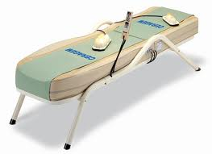
A Ceragem masszázságy által nyújtott kezelés keleti akupresszúrás gyógymódon alapul. A masszázságy jade kövei bizsergető, görgő, apró mozdulatokkal masszírozzák gerinc melletti mélyizmokat és a különböző akupresszúrás pontokat. Ezzel aktiváljuk a hozzá tartozó szervek működését, beindítjuk a szervezet öngyógyító folyamatait.
A Ceragem masszázságy használatát bátran ajánljuk hátfájósoknak, gerincsérveseknek. Segíti a nyaki görcsök elmúlását, az erős fájdalmakat okozó porckorongok hidratálását, így a kezelés után csökken a fájdalom, egyszerűbb és könnyedebb a mozgás, nem beszélve a remek közérzetről.
Balinéz talp- és lábmasszázs
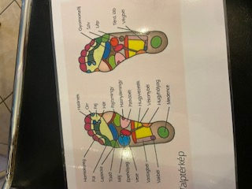
Élvezze a keleti masszázstechnikát, a svéd masszázs fogásait és az ajurvédikus elemeket egyetlen pihentető masszázsban! A balinéz talpmasszázs a láb reflexpontjainak ingerlésével javítja a vérkeringést, normalizálja a vérnyomást, segít megszabadulni az álmatlanságtól, fejfájástól.
A pihentető masszázs alatt szinte újászületik, testileg-lelkileg felfrissül, lába megkönnyebbül az egész napos igénybevétel után. A balinéz talpmasszázs szinte az összes szervünkre képes jótékony hatását kifejteni, így minden vendégemnek jószívvel ajánlom. Frissüljön fel Ön is egy hosszú nap után a Levendula Szalonban!
Balinéz lábmasszázs sok tekintetben eltér a hagyományos talpmasszázstól
Mint nevéből is kiderül nem szükül le a talp masszirozására,hanem a comb közepéig masszirozzaa lábakat.
A talpon sem hagyományosan dolgozik a reflex pontokkal, hanem egy speciális pálcikával ötvözi a hatásait
A lábmasszirozás után a páciens még egy vállmasszirozást is kap!
A masszázs aromaolajokkal történik!
Vendég mondta:
,,Annyira jól esett, hogy elaludtam! Ezt minden arckezeléseddel összekötöm!''
Fotelmasszázs

Gravitációs masszázs lábujjtól egészen a nyakig A programok beállításával kezelhető a kéz és a láb is! A háti csomókat teljesen kimasszirozza. Kellemes közérzetet teremt.
Gépi talpmasszázs
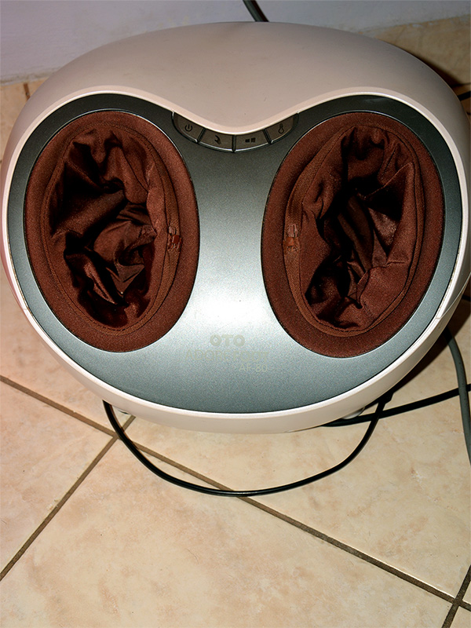
Csizma formában kezeli a lábfejet és a talpat.
Erőssége programozható és a gépnek köszönhetően érezhetően könnyebb a járás.
Erika
"A nyugalom és a megszépülés szigete!"
Algologie
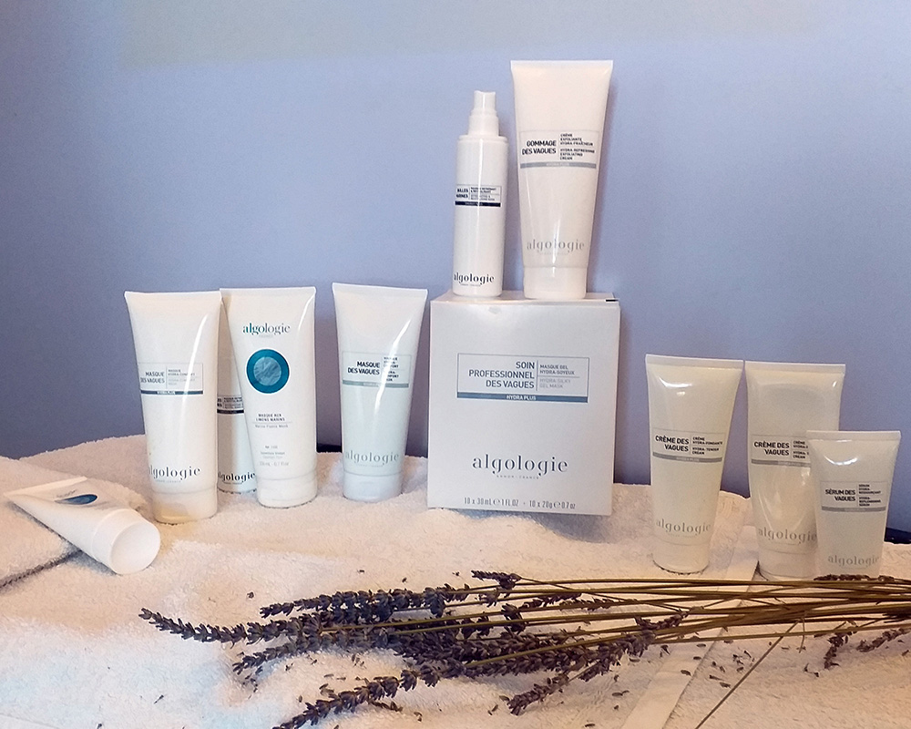
Az Algologie márka mottója: tengeri bőrápolás természetes hatóanyagokkal. A francia márka az érintetlen természet szívében, a legnagyobb európai tengeri alga lelőhely közelében készíti professzionális kozmetikai termékeit. Saját laboratóriumaikban a tengervíz és az algák jótékony hatását egyesítik a legmodernebb tudománnyal. Kozmetikumaik kifejlesztése szoros együttműködés eredménye: laboratóriumuk molekuláris biofizikai-kémiai szakemberrel és világszínvonalú alga specialistákkal dolgozik együtt. Termékeik 0% Parabén, 0% Szilikon, 0% Ásványi Olaj tartalommal varázsolják újjá bőrét.
Tudjon meg többet: https://www.algologie.hu/
Mesotica
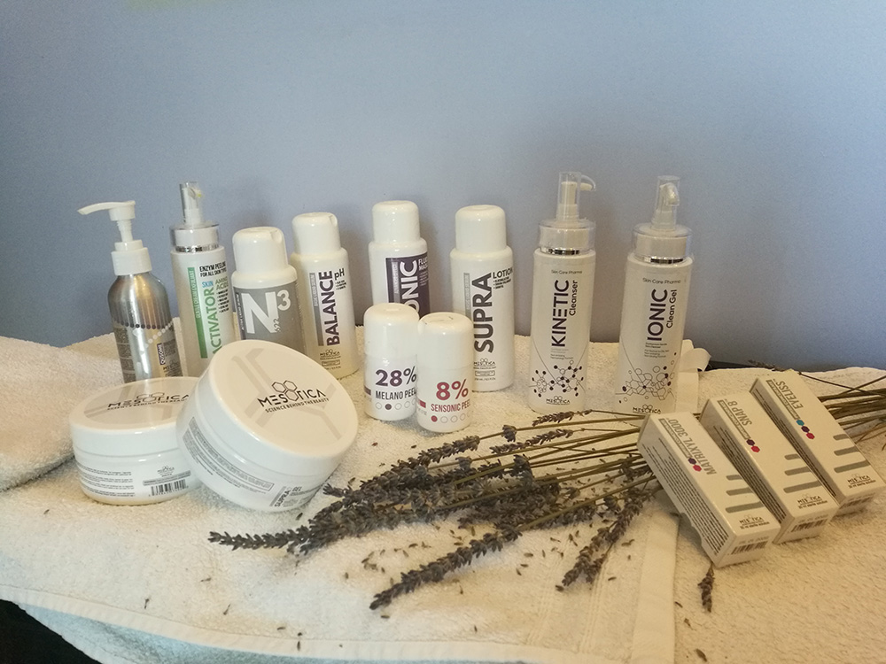
A Mesotica a világon elsőként alkotta meg az innovatív, peptid központú kozmetikai termékcsaládot, ami „intelligens peptidek” segítségével hatékonyan aktiválja a bőr önmegújító folyamatait. A Mesotica termékek különlegessége a kiemelkedően magas hatóanyag tartalom: kifejlesztették a kozmetikai ipar legmagasabb hatóanyag tartalmú, látványos eredményeket biztosító bőrápolási rendszerét. A Mesotica termékeket ajánlom minden 35 év feletti, önmagára és környezetére igényes nőnek, hiszen a Mesotica teljes bőrszerkezetet átfogó bőrápolási koncepciója high-tech hatóanyagaival rétegenként építi és aktiválja újra a bőr működését.
Tudjon meg többet: https://mesotica.hu/
Gigi
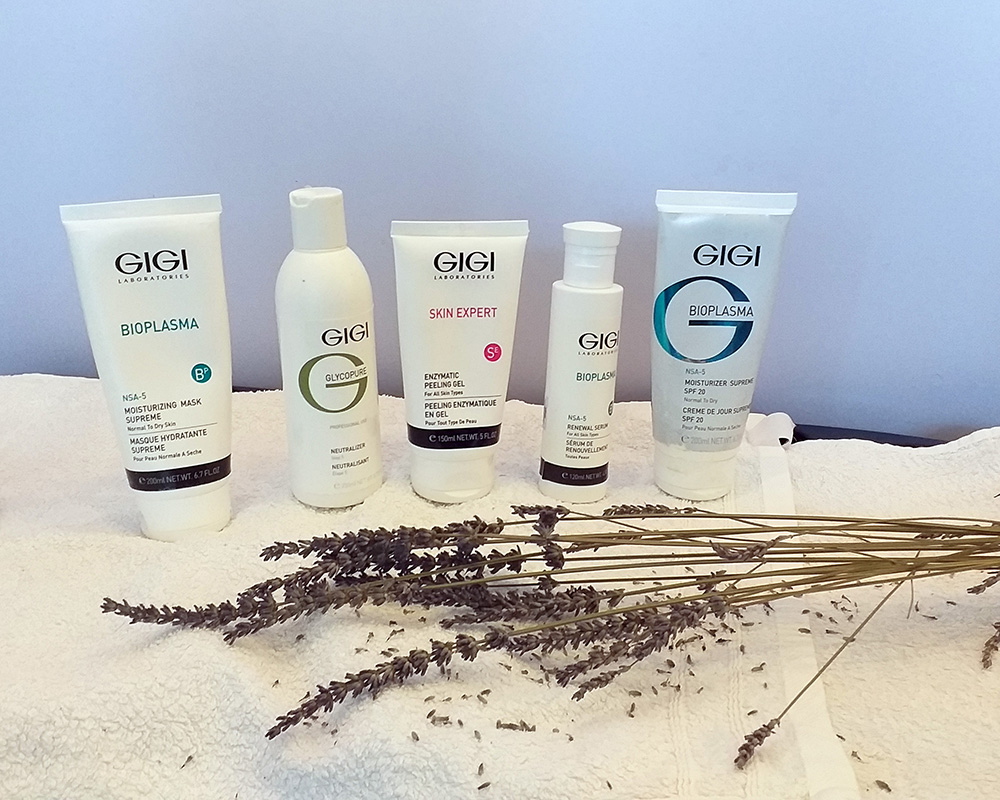
A GIGI Cosmetic Laboratories termékei nem véletlenül tartoznak a legnépszerűbb kozmetikai márkák közé hazánkban. Termékpalettája minden bőrproblémára kínál megoldást: akne, sápadt, fakó, pigmentált, száraz, érzékeny, kivörösödő, vagy indokolatlanul zsíros bőr, városi élet okozta kellemetlenségek? Létezik direkt az Ön bőrére kifejlesztett termék. A GIGI, mint professzionális kozmetikum nem kapható sehol áruházban vagy kiskereskedelmi üzletben, mert hatóanyag tartalma megköveteli a kozmetikus szakember tudását. Ha felkeltette az érdeklődését a termék, jöjjön el a Levendula Szalonba és tegyen egy próbát!
Tudjon meg többet: http://www.gigicosmetic.hu/
La Sultane de Saba
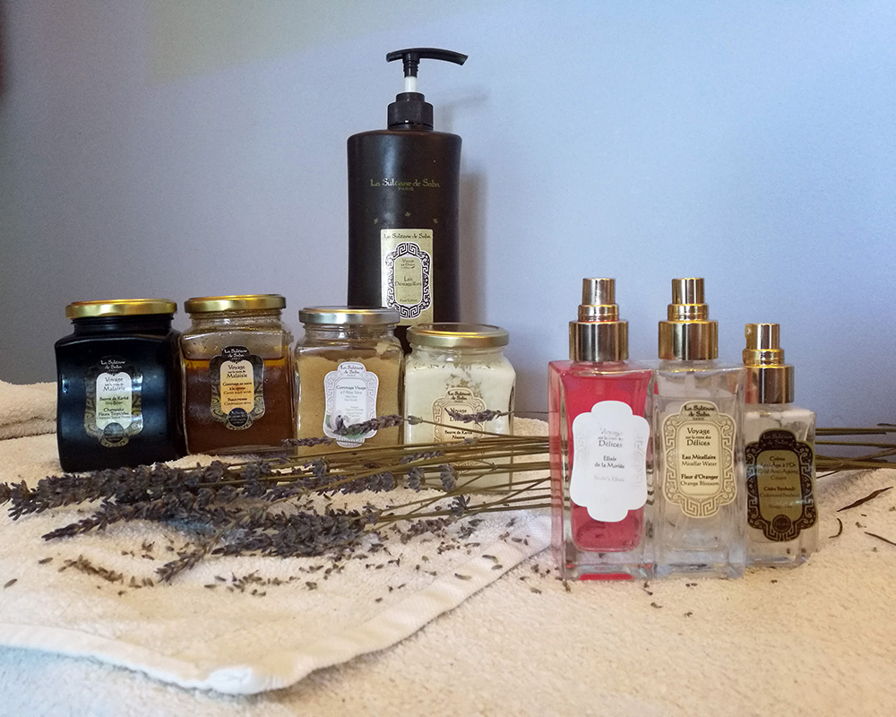
Sissi Királynő kedvenc termékei!
A La Sultane de Saba keleti nők ősi és értékes szépségrituáléjából meríti tudását, ami autentikus és eredeti termékekben, valamint az elbűvölő illatokban és káprázatos színekben elérhető arc- és testkezeléseken ölt testet. A La Sultane de Saba kezelés során a szépülés mellett képzeletbeli utazást tesz majd, felfedezve távoli horizontokat, ahol a test és a lélek visszatér a relaxálás és a jólét gyökereihez. Szívből ajánlom mindenkinek, aki a több száz éves kozmetikai rituálék teremtette kozmetikumokkal szeretne szépülni és kényeztetni bőrét, érzékeit.
Tudjon meg többet: http://lasultanedesaba.hu/
Ágnes
"Zsuzsi a kozmetikus kedves, gyors, nagyon ügyes, ajánlom mindenkinek. :) Kártyával is lehet nála fizetni."
Árak
!!AKCIÓ!!
Gépi wellness akció! Napi egy gép használatára havi bérlet: 20000 Ft.
Holttengeri Arckezelés + talp- és lábmasszázs aromaolajokkal kedvezményes áron: 20000 Ft.
Ajándék kártya is rendelhető. Kártyával is fizethető!
Gyere havi bérleteddel minden nap egy masszázsra!
Választhatsz:
Akár minden nap másikat! Egy havi bérlet ára: 20000Ft
Akció vége: December 20.
| Kezelések | Ár | |
|---|---|---|
| Általános kezelés | 8500 - 16500 Ft | |
| Tini kezelés | 8500 Ft | |
| Arany kezelés Saba termékekkel (arc, nyak, dekoltázs, karok) | 15500 Ft | |
| Algologie Arckezelés | 15500 Ft | |
| Mezotikai arckezelés - Anti-Age | 15500 Ft | |
| Bioplazma arckezelés - Anti-Age | 15500 Ft | |
| Argánolajos arckezelés száraz vízhiányos bőrre | 9500 Ft | |
| Radír, masszázs, pakolás | 4500 - 6500 Ft | |
| Ultrahang | 2500 Ft | |
| Allergiamentes szempilla festés | 1200 Ft | |
| Szemöldök festés | 1200 Ft | |
| Gyantázás | Hagyományos | Tartós Szérumos |
| Szemöldök | 800 Ft | 2500 Ft |
| Bajusz | 800 Ft | 2500 Ft |
| Áll | 800 Ft | 2500 Ft |
| Hónalj | 1500 Ft | 4500 Ft |
| Kar | 1500 Ft | |
| Bikini | 1500 Ft | 2500 Ft |
| Teljes intim | 5500 Ft | 14000 Ft |
| Láb térdig | 2000 Ft | 14000 Ft |
| Láb végig | 3900 Ft | 2800 Ft |
| Comb | 2500 Ft | |
| Gépi Masszázsok | Ár | |
| Hullámmasszázs | 3000 Ft / 30 perc | |
| Hullámmasszázs + tekercselés | 5000 Ft / 30 perc | |
| Fotelágy professzionális masszázs | 2000 Ft | |
| Callux lábkezelés + ajándék kézápolás | 5000 Ft | |
| Cerogem masszázs | 3000 Ft / 40 perc | |
| Gépi Talpmasszázs | 1500 Ft / 15 perc | |
| Kézi Masszázsok | Ár | MRT koreai fiatalító arcmasszázs (professzionális termékekkel) | 19500 Ft |
| Balinéz talp- és lábmasszázs | 6500 Ft / 40 perc | |
Ágnes
"25 éve járok Zsuzsihoz! Kellemes lét biztosítva!"
Cím: 1032, Budapest, Szőlő utca 72. (Faluház)
Bejelentkezés, további információ:
Telefon: 06 70 364 8922
Kezelés közben a vendégek zavartalan kikapcsolódása érdekében nem válaszolok a beérkező hívásokra. Ha nem vettem fel, a lehető legrövidebb időn belül visszahívom Önt!
E-mail: kozmizsuzsi@gmail.com
Facebook oldalam
- 137, 218, 237-es busz Flórián tér megállótól 3 perc.
- 9-es busz Kiscelli utca megállótól 5 perc.
- 1-es villamos Flórián tér megállótól 7 perc.
- 34-es, 106-os, 134-es busz Flórián tér megállótól 9 perc.
- Az autóval érkezők az épület etőtti nagy parkolót tudják igénybe venni.
Mária
"Egyszer régen betévedtem, azóta is sokszor járok ide, mert testem-lelkem, közérzetem itt van otthon"